O desmatamento global teve início com o modelo de
produção da sociedade baseado na exploração de recursos
naturais para o desenvolvimento das atividades produtivas.
Esse cenário foi marcado pela ocupação de novos territórios
por meio das grandes navegações e pelo processo de colonização
e, ainda, pelo crescimento e consolidação da urbanização
e da industrialização em escala mundial.
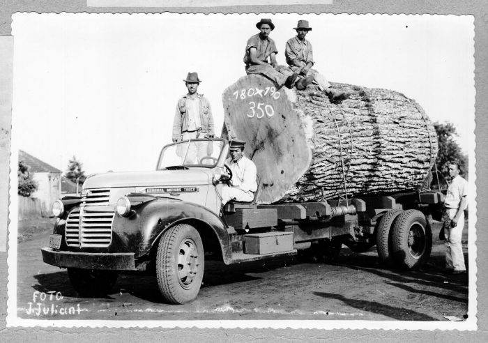
No século XX, o desmatamento foi muito recorrente nos países desenvolvidos,
já que vivenciavam um largo processo de industrialização e desenvolvimento
das atividades produtivas. Nas últimas décadas, o desmatamento esteve concentrado
nos países subdesenvolvidos e emergentes. Esse cenário é resultante da política
econômica desses países, concentrada na produção de bens primários, em especial,
voltados para a exportação.
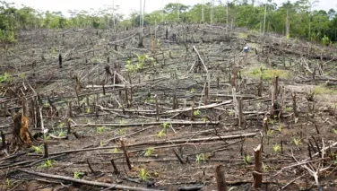
No contexto mundial, o Brasil tem lugar de destaque,
sendo conhecido mundialmente como um dos países que
mais desmatam no globo. Além do Brasil, que tradicionalmente
ocupa a dianteira nos levantamentos sobre desmatamento no
mundo, outros países que possuem florestas tropicais,
como Indonésia, Malásia e República Democrática do Congo,
também têm níveis de desmate muito elevados.
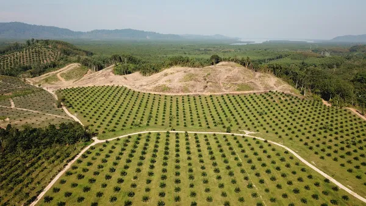
A produção agrícola é o principal motor do
desmatamento nos países subdesenvolvidos e emergentes
Desmatamento no Brasil
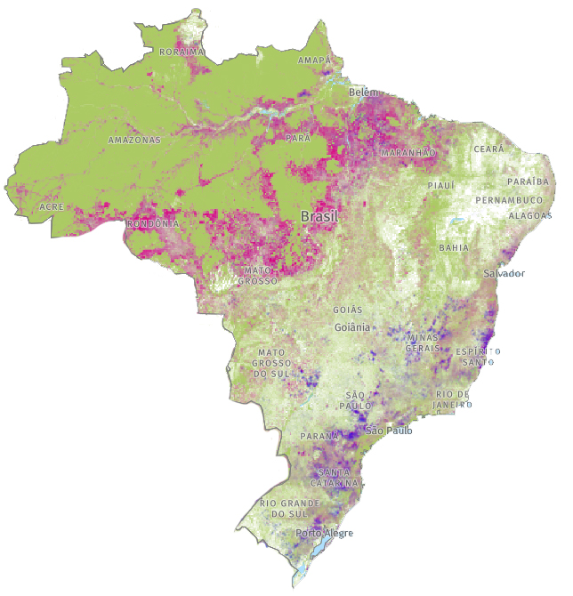
O desmatamento no Brasil é um dos grandes problemas
ambientais que o país enfrenta na atualidade.
Várias são suas causas, e elas têm peso distinto
nas diversas regiões, sendo as mais importantes a
conversão das terras para a agricultura ou para a
pecuária, a exploração madeireira, a grilagem de
terras, a urbanização e a criação de infraestruturas como pontes, estradas e barragens
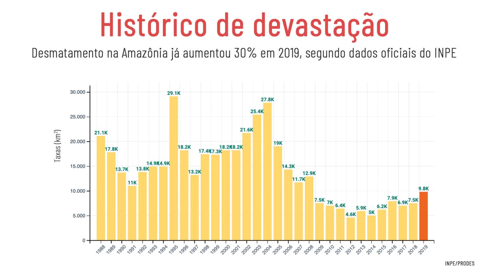
Síntese histórica
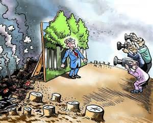
Há indícios de que o homem vem provocando o
desmatamento desde que chegou ao atual território
do Brasil, há milhares de anos, mas é difícil estimar
o ritmo e a extensão do processo naqueles tempos remotos.
As evidências correspondentes a algumas regiões amazônicas
indicam que áreas extensas sofreram clareamento, que depois
foi revertido por recuperação espontânea da mata quando as
terras foram abandonadas. Isso parece ter acontecido em ciclos
repetidos. Modificações importantes na composição e cobertura
florestal de muitas regiões também ocorreram por virtude de
mudanças climáticas, até a relativa estabilização do clima por
volta de 4 mil anos atrás.
Cultura, sociedade e mercado
O desmatamento é um problema global,
e tem sido objeto de muito estudo,
debate e preocupação internacional,
devido à grande importância das florestas
para a preservação da vida na Terra e
para o sustento da civilização humana.
A causa mais essencial do desmatamento
global é o explosivo aumento da população
humana, gerando uma aceleração exponencial
na demanda por recursos naturais e espaço
para habitação e implantação de atividades
agropecuárias para produção de alimento.
Impactos
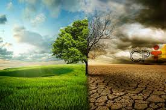
O desmatamento provoca uma série de impactos diretos
e indiretos e interage com outros problemas para piorar
os efeitos gerais. Podem ser divididos em ambientais,
econômicos, sociais e culturais, mas eles tampouco se
manifestam isoladamente, tendo amplas ramificações e
associações. Para a maioria dos cientistas, as agressões
que as florestas brasileiras vêm sofrendo provavelmente
desencadearão efeitos negativos importantes para o
abastecimento de água e material de construção, para
a produção de energia, remédios e alimentos, para
a segurança social e para muitas outras áreas vitais
da economia, com efeitos sobre o clima e o regime
de chuvas que devem repercutir também em escala global.
Ambientais
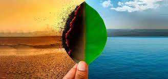
O efeito ambiental mais direto é a radical perda de biodiversidade.
Com o desmatamento toda a cobertura vegetal é removida. As florestas
não comportam apenas as plantas, mas são ricos ecossistemas onde
vive uma fauna diversificada, que depende diretamente das plantas
para sua sobrevivência em termos de fontes de alimento e locais de
abrigo e reprodução. Muitas espécies vivem exclusivamente sobre as
plantas e jamais vão ao solo. Com a erradicação das plantas, as
espécies animais que ali vivem também desaparecem. Numa cultura
ainda dominada pelos valores do mercado e da política, em que
se imagina a natureza como inesgotável, o puro valor de existência
das plantas e animais é pouco reconhecido.
Econômicos e estruturais
Tem sido muito debatida a relação entre custos e
benefícios econômicos do desmatamento. Essa estimativa
ainda precisa de aperfeiçoamento, já que alguns aspectos
ainda não são bem quantificáveis. Muitos estudos indicam
que o desmatamento gera lucro, mas segundo apreciação do
Banco Mundial, em grande parte esses estudos são excessivamente
mecânicos e simplistas, desconsiderando a multiplicidade de variáveis
locais, humanas, sociais, culturais, que geram efeitos indiretos e
tendências não previsíveis pelos modelos usados, e em geral não
levam em conta os custos ambientais associados, e por isso são
de valor limitado.
Desmatamento na Amazônia
Chamada de PrevisIA, ferramenta mostra as
áreas de floresta sob maior ameaça de
derrubada para auxiliar nas ações de prevenção
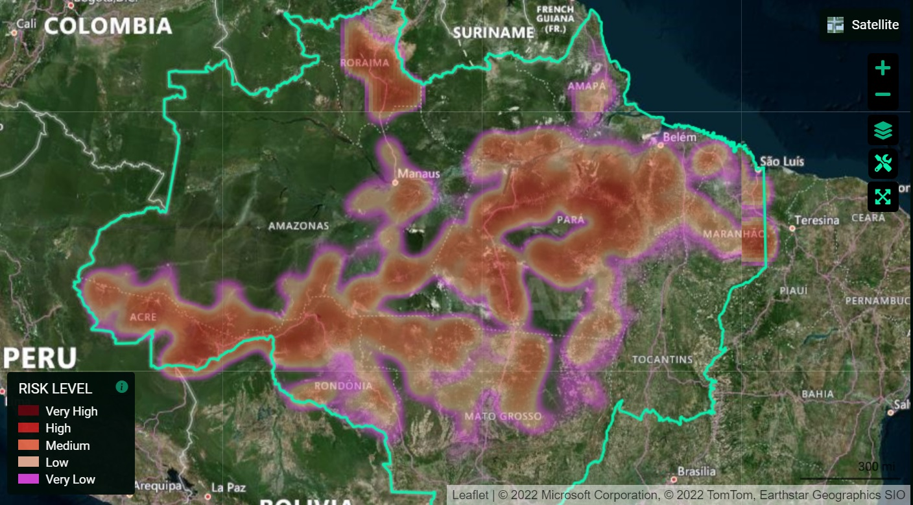
Se medidas mais efetivas para combater o
desmatamento na Amazônia não forem tomadas,
a região pode ter em 2022 a maior área de
floresta derrubada dos últimos 16 anos.
As estimativas da plataforma de inteligência
artificial PrevisIA apontam para 15.391 km²
sob risco de devastação, uma área quase
três vezes maior do que o Distrito Federal.
O cálculo do risco leva em conta o chamado
“calendário do desmatamento”, que por causa
do período de chuvas na Amazônia vai de agosto
de um ano a julho do ano seguinte. Ou seja:
conforme a ferramenta, esses mais de 15 mil km²
podem ser atingidos entre agosto de 2021 e julho
de 2022. Caso se concretize, o desmatamento
será o maior desde 2006 segundo a série histórica do
Instituto Nacional de Pesquisas Espaciais (Inpe).
Além disso, será 16% superior do que a devastação
registrada pelo órgão no calendário anterior,
de agosto de 2020 a julho de 2021, que foi de 13.235 km².
Essa comparação é possível porque a PrevisIA usa a série
histórica de desmatamento do Inpe (Prodes) como uma das
variáveis do modelo de risco.
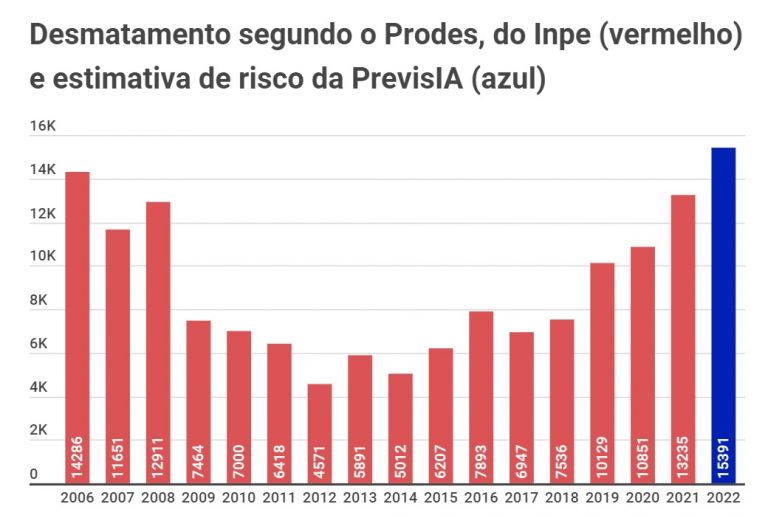
Pesquisador responsável pela plataforma, Carlos Souza Jr.,
do Instituto do Homem e Meio Ambiente da Amazônia (Imazon),
ressalta que 2022 é um ano de eleição, quando, em geral,
as fiscalizações costumam reduzir. Nos últimos três anos
eleitorais, por exemplo, houve uma alta no desmatamento.
“Por isso, é importante que órgãos de controle também
atuem na proteção da Amazônia, como os Ministérios Públicos
dos estados e o da União. Porém, a liderança na prevenção do
desmatamento da Amazônia e de outros biomas brasileiros tem
que ser do governo federal. Os estados, por sua vez, têm um
papel importante no controle da devastação, principalmente em
casos de omissão do governo federal”, explica o especialista.
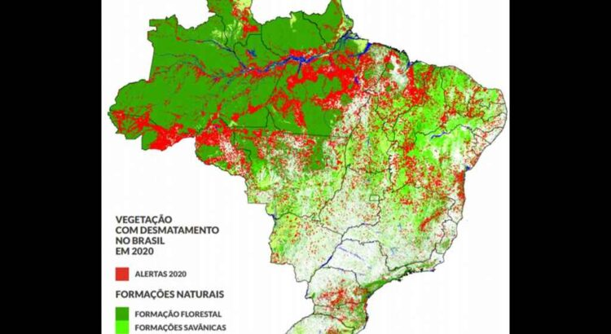
Relatório mostra que 99,8% dos desmatamentos no Brasil em 2020 foram ilegais
O ano de 2020 foi especialmente difícil para o Brasil.
A cada dia, enquanto uma média de 672,2 brasileiros
perdiam suas vidas em decorrência da Covid-19, cerca de
2 milhões de árvores, ou 3.795 hectares de vegetação
nativa e toda a sua biodiversidade associada, eram perdidas para o desmatamento.
Desmatamento na Mata Atlântica
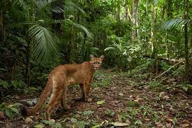
A Mata Atlântica é o bioma mais devastado do Brasil,
sendo que, na atualidade, restam menos de 13% da
cobertura original desse tipo vegetacional.
No último ano, de acordo com dados do MapBiomas,
cerca de 10 mil hectares da Mata Atlântica foram
derrubados. Entre as principais causas dos
desmatamentos nesse bioma, estão a extração de recursos
naturais, a utilização de madeira para produção de carvão
vegetal e celulose, e, ainda, o avanço da urbanização.
A criação de loteamentos ilegais, em áreas rurais e de
preservação, fomentados pelo crescimento das cidades,
gera grande parte do volume de corte da Mata Atlântica na atualidade.
Desmatamento no Cerrado
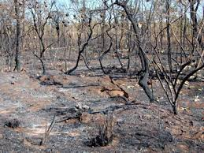
Os dados obtidos pelo MapBiomas mostram que mais de
408 mil hectares do Cerrado foram desmatados no ano
de 2019, sendo esse o segundo bioma mais devastado do Brasil.
O desmatamento em regiões de Cerrado está ligado diretamente
ao desenvolvimento de atividades produtivas, em especial, a agropecuária.
O avanço da agricultura e da pecuária na região,
caracterizado pela expansão da fronteira agrícola brasileira,
gera o maior volume de derrubada florestal nesse bioma.
O destaque está na produção de cultivos de soja, milho
e algodão — modelo baseado na monocultura de exportação
e que necessita de grandes áreas desmatadas para a sua implementação.
Soluções para o desmatamento
As soluções para o desmatamento em nível global e regional
devem estar concentradas na possibilidade de diminuir-se o
volume desmatado, preservar-se a biodiversidade e garantir-se
condições de vida adequadas para a população. Desse modo, as
soluções para o desmatamento perpassam por:
Implementação de um modelo econômico de produção
baseado no desenvolvimento sustentável;
Participação do poder público e da
iniciativa privada no desenvolvimento de
ações de preservação ambiental;
Aplicação da legislação ambiental por
meio da fiscalização e da punição de crimes ambientais;
Bonificação para produtores rurais e outros
atores econômicos que contribuem para a
preservação de áreas de floresta;
Criação de unidades de conservação e preservação
ambiental com foco em regiões com alta biodiversidade;
Promoção de políticas de reflorestamento de
áreas devastadas com espécies nativas e
repovoamento de animais.